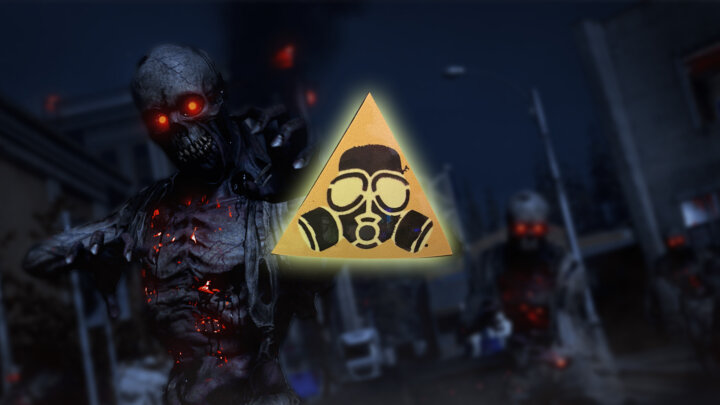

Call of Duty Warzone’s apocalypse event arrives on April 21st
Are you ready for the massive changes that will follow the event?
We are getting close to Call of Duty: Black Ops Cold War’s season 3, which will kick off on April 22nd. But a new teaser now reveals that Warzone will change massively a day prior already.
The zombie outbreak in Verdansk has been getting worse over the recent weeks as the undead have made their way steadily north throughout the map. By April 21st they will most likely reach the dam as influencers have showcased a helmet and note they got from Treyarch:
Both pictures in combination imply a much more serious response once the damn is reached by the zombies. Call of Duty’s official Twitter has also posted a teaser for things to come on April 21.
Many hints scattered throughout the weeks have led to the conclusion that Verdansk is most likely getting nuked and obliterated to make way for the new Warzone Map